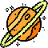
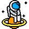

Saturno e seus Anéis

Os anéis que observamos em Saturno são formados por bilhões de fragmentos de gelo e rochas espaciais que variam de tamanho. Alguns são semelhantes a grãos de areia. Outros, ao tamanho de uma casa. Existe um conjunto de 7 anéis principais, com espaço entre eles, em volta do planeta.
Referência: Espaço do conhecimento UFMG. (Citação direta)
.png)
Saturno tem 82 satélites naturais, como a nossa Lua. Acredita-se que um deles, chamado de Rhea, também tenha anéis. Alguns desses corpos celestes ajudam a manter os anéis em órbita, evitando uma expansão desenfreada pelo espaço.
Referência: Espaço do conhecimento UFMG. (Citação direta)
Saturno, o que tem de especial?

De todos os planetas do nosso sistema, Saturno é aquele que, sem dúvida alguma, é o favorito de muita gente. Principalmente pelos seus anéis. Eles refletem lindamente a luz do sol e por causa disso puderam ser observados ainda em 1610, quando Galileu Galilei apontou pela primeira vez o telescópio para o céu.
Referência: Fundação CECIERJ. (Citação direta, 2014)